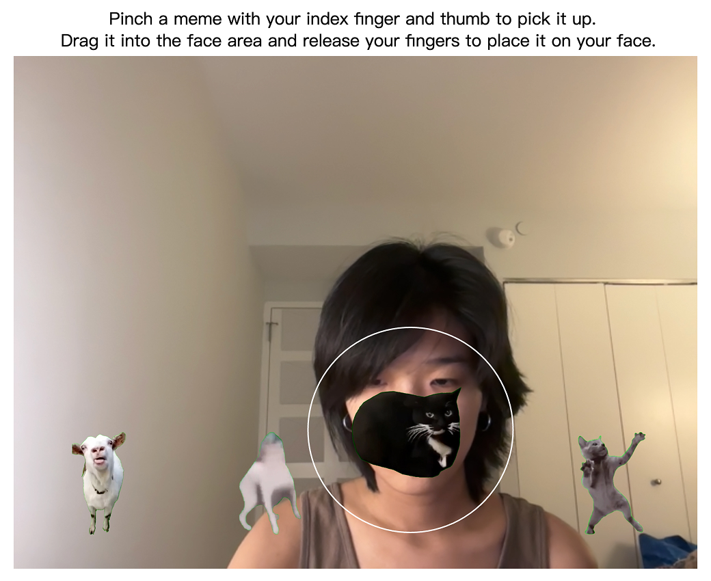
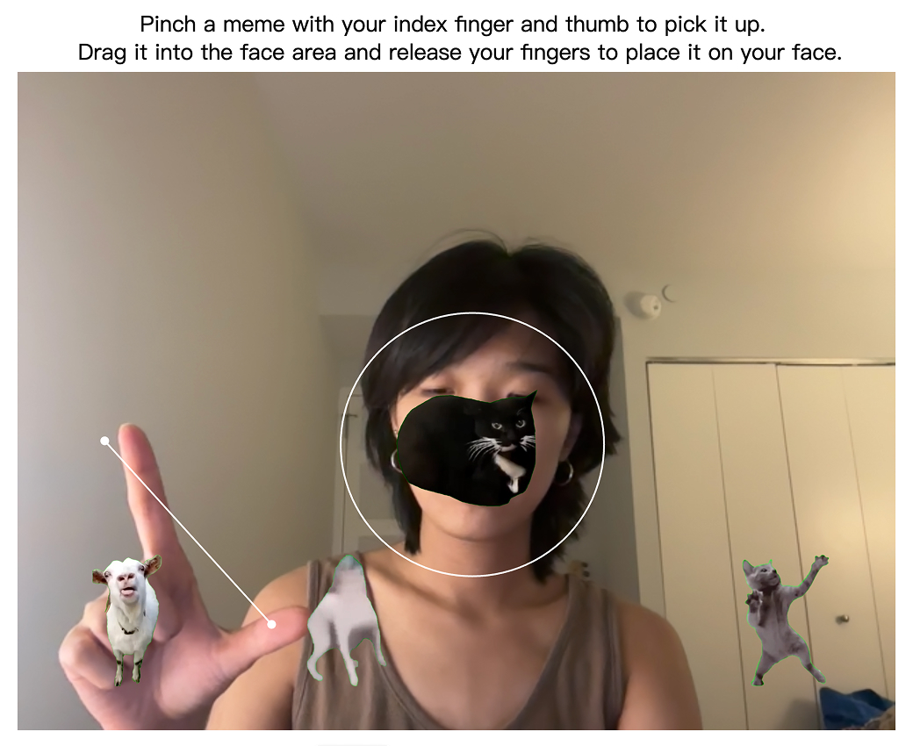
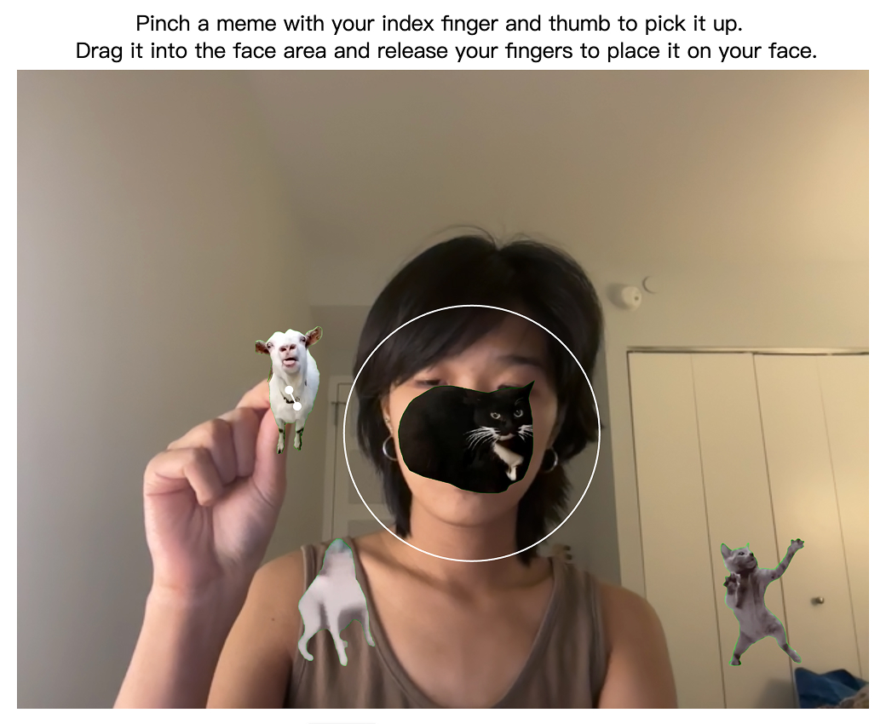
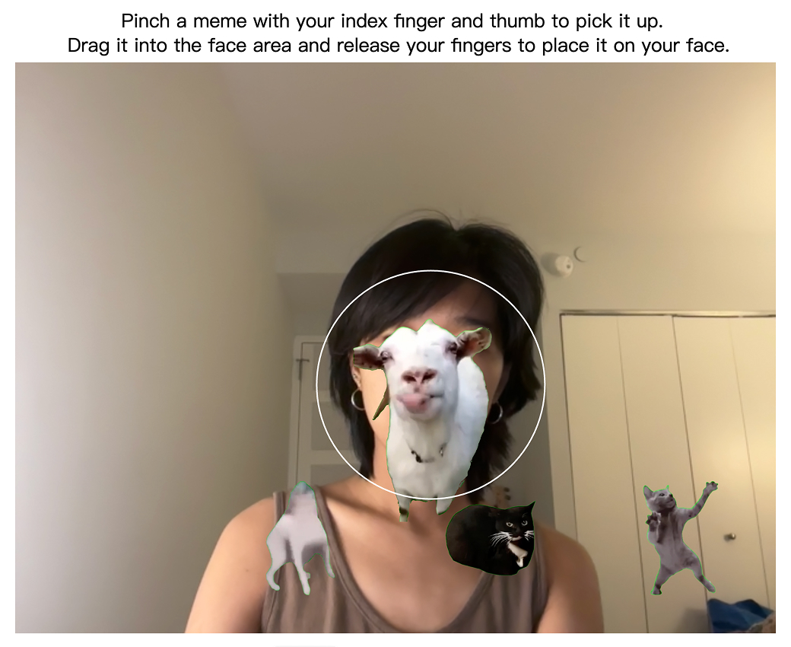

This week, I wanted to combine videos with hand gestures to create some fun interactions. I used some popular internet memes, allowing users to grab a meme by pinching their index and thumb together, drag it onto their face, and release it to trigger the corresponding video.
For the technical part, I used HandPose and FaceMesh from ml5.js to track hand and facial keypoints, and used dist() to calculate the distance between keypoints to detect grabbing, releasing, and whether the meme is within the face area. Besides, I also used p5.js to set the alpha value of green pixels to 0 to remove the green screen background.



